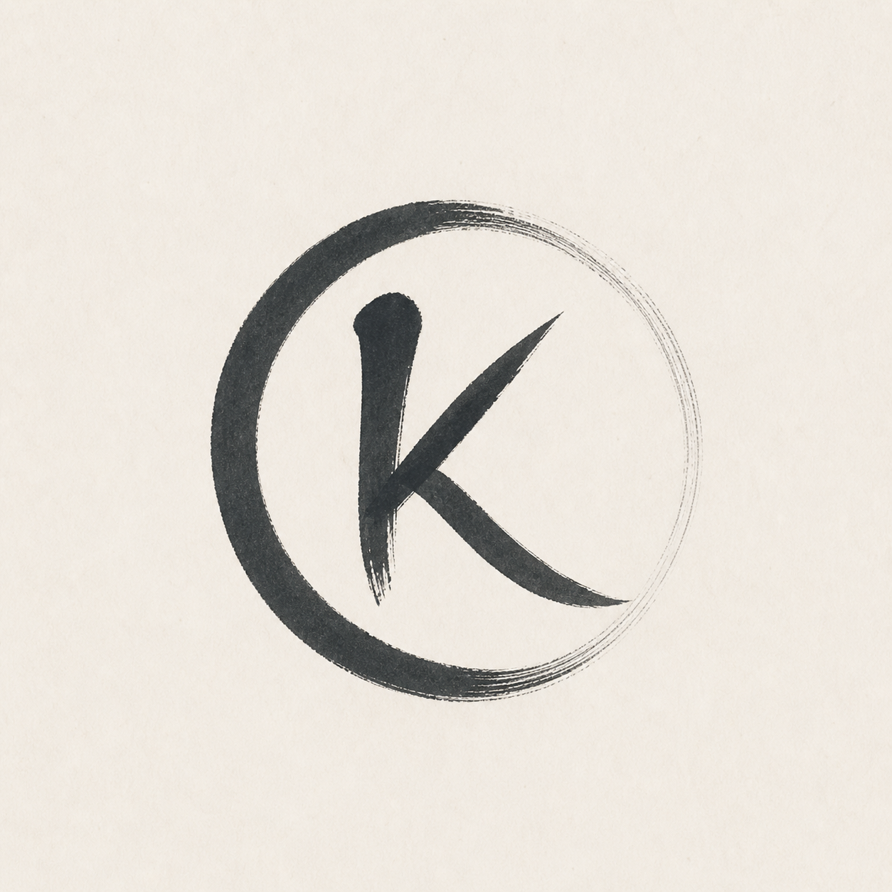
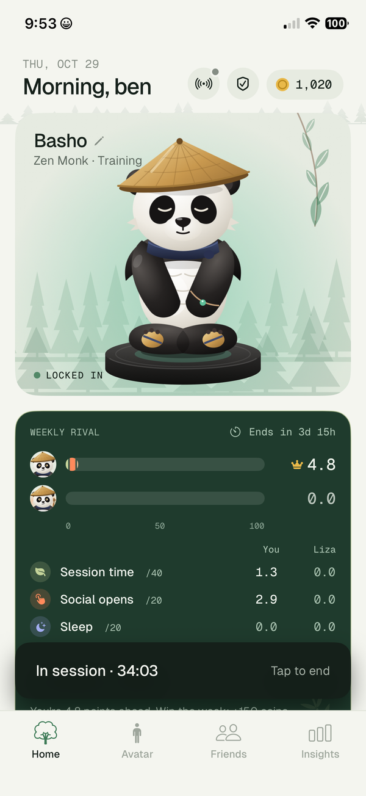

Wildly OfflineA Guided Tour
Tap through the screens below. Each one is built around a simple idea — that spending less time on your phone should feel less like punishment and a lot more like getting something back.

Tap Start and your distracting apps lock. Only the ones you allow stay open. Every phone-free minute earns coins, and your figure waits for you on Home along with this week's friendly rival.
Common Questions